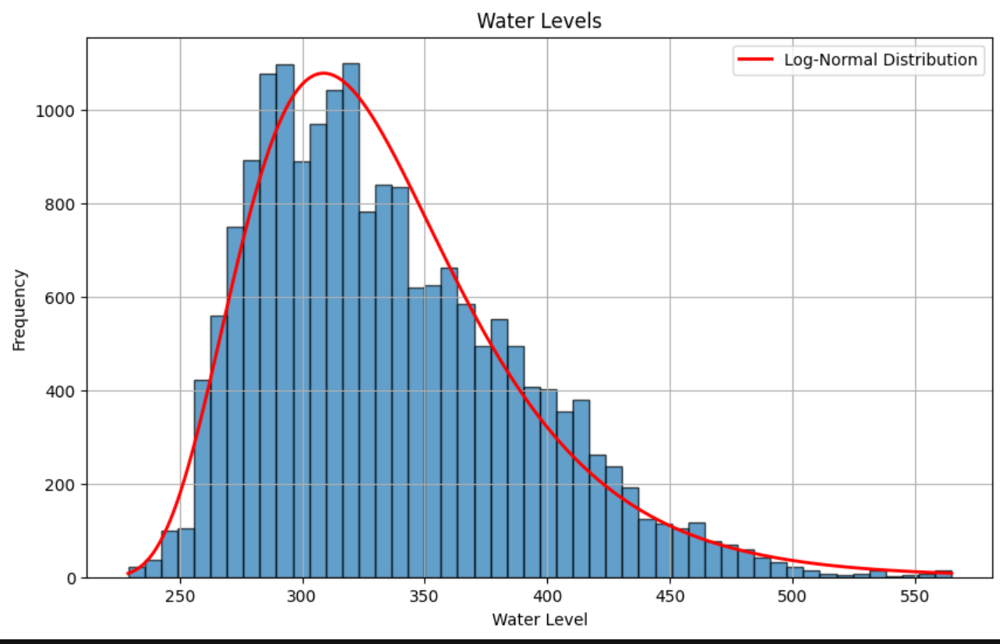

1 Introduction
Water levels in large lakes are subject to complex dynamics driven by meteorological conditions, hydrology, and long-term climate trends. For Lake Constance, these fluctuations have direct operational consequences. During periods of high water levels, steeper entry and exit angles at ferry ramps complicate boarding and disembarking, particularly for low-profile vehicles that may even be restricted to avoid damage. Conversely, low water levels can reduce cargo capacity, require stricter loading rules, and increase delays and fuel consumption due to suboptimal routing and load distribution.
These operational frictions lead to customer dissatisfaction, lost revenue, and higher overall costs for ferry companies operating on Lake Constance. Reliable short-term water level forecasts are therefore highly valuable, as they enable better planning of schedules, loading strategies, and potential service suspensions.
In this project, we develop models to predict next-day water levels at Lake Constance using a comprehensive set of meteorological, hydrological, and climate-related features. Formally, let
- \(y_t\) denote the observed lake level on day \(t\), and
- \({x}_t\) the feature vector observed on day \(t\).
The one-step-ahead forecasting problem is to construct a model \(f(\cdot)\) such that
\[ \hat{y}_{t+1} = f(x_t), \qquad t = 1,\dots,T-1, \]
and to evaluate its out-of-sample performance on a hold-out period.
We compare several classes of models:
- a classical ARMA time-series model,
- regularized linear regression (Ridge and Lasso),
- a non-linear Random Forest, and
- a feed-forward Neural Network.
Performance is assessed via the root mean squared error (RMSE),
\[ \text{RMSE} = \sqrt{\frac{1}{N}\sum_{t=1}^{N}(y_t - \hat{y}_t)^2}, \]
and benchmarked against a naive persistence model (_{t+1}^{} = y_t). We find that modern machine learning methods and regularized linear models substantially improve upon the naive baseline, with Ridge regression achieving the lowest RMSE in our experiments.
2 Methodology
2.1 Problem Setup
We focus on daily water levels measured in Constance, one of the standard gauging stations at Lake Constance. Let \(\{y_t\}_{t=1}^T\) denote the water level time series (in cm). The goal is to forecast \(y_{t+1}\) using information available up to day \(t\).
The general prediction framework can be written as
\[ y_{t+1} = f(x_t) + \varepsilon_{t+1}, \]
where \(x_t\) contains contemporaneous and lagged features and \(\varepsilon_{t+1}\) is an error term with mean zero.
2.2 Data
We combine several datasets to construct \({x}_t\):
Hydrological data
- Daily water levels of Lake Constance (station Constance) from 1924 to 2023.
- Weekly groundwater levels from a nearby station.
- Daily water levels of Lake Constance (station Constance) from 1924 to 2023.
Meteorological data (daily)
- humidity, mean temperature, precipitation,
- snow depth, sea-level pressure,
- sunshine duration, global radiation, wind speed.
- humidity, mean temperature, precipitation,
Lunar data
- Daily moon illumination from NASA’s Horizons system, representing the fraction of the moon’s disk that is illuminated.
Climate change data
- Annual mean surface temperature change for Switzerland, used as a proxy for long-term climate trends.
All datasets are converted to CSV format, cleaned, and merged by date to form a single panel. The final modeling period spans 1973–2023, providing a long history with clear seasonal and interannual patterns.
2.3 Preprocessing
Several preprocessing steps are required before modeling:
2.3.1 Temporal alignment and target shift
Because we want to predict tomorrow’s water level using today’s information, the target series is shifted:
\[ \tilde{y}_t = y_{t+1}, \qquad t = 1,\dots,T-1, \]
so that each row \((x_t, \tilde{y}_t)\) encodes features at day \(t\) and the corresponding water level on day (t+1).
2.3.2 Handling missing values and outliers
- Groundwater (weekly) and climate change (annual) data are forward-filled to match the daily resolution.
- Missing values in weather variables (e.g., snow depth, sunshine, wind speed, radiation) are imputed using **seasonal monthly means, preserving seasonal patterns.
- Outliers are identified via time-series plots and corrected using a 30-day rolling mean where appropriate, relying only on historical/current information to avoid data leakage.
2.3.3 Train–test split
To ensure a realistic evaluation, we use a temporal split:
- Training set: data up to 2017 (inclusive).
- Test set: 2018–2023.
This respects the time order and avoids training on future information.
2.3.4 Log transformation and feature engineering

Exploratory analysis shows that water levels are right-skewed and approximately log-normally distributed. A log transformation stabilizes variance:
\[ z_t = \log(y_t). \]
To capture temporal dependence, we add lagged levels as features:
\[ z_{t-1}, z_{t-2}, \dots, z_{t-7}, \]
representing the last seven days of water levels. Because these lags would be known at prediction time, they do not introduce look-ahead bias.
For models that can exploit seasonality directly (Random Forest, Neural Network), we additionally encode calendar effects via cyclical features, e.g.
\[ \begin{aligned} \text{month\_sin}_t &= \sin\left( 2\pi \cdot \frac{\text{month}(t)}{12} \right), \\ \text{month\_cos}_t &= \cos\left( 2\pi \cdot \frac{\text{month}(t)}{12} \right), \end{aligned} \]
and analogous terms for week-of-year, half-year, etc.
For linear models and ARMA, we work on deseasonalized versions of the series to meet stationarity and linearity assumptions (see below).
2.4 Time-Series Decomposition
Fourier analysis and seasonal plots reveal strong annual and semi-annual components in the water level series, but no pronounced long-term trend. For models that require approximate stationarity (ARMA) or that may be dominated by spurious seasonal correlations (linear regression), we:
- Remove seasonal components from the target and from features that share similar seasonality.
- Detrend only those features exhibiting strong trends unrelated to the target (notably the climate change indicator).
Stationarity is confirmed using Augmented Dickey–Fuller (ADF) and KPSS tests on the deseasonalized target.
3 Models
We compare four main model classes.
3.1 ARMA
The ARMA model treats deseasonalized log water levels as a univariate time series \(\tilde{z}_t\) and assumes
\[ \tilde{z}_t = \mu + \sum_{i=1}^{p} \phi_i \tilde{z}_{t-i} + \sum_{j=1}^{q} \theta_j \varepsilon_{t-j} + \varepsilon_t, \qquad \varepsilon_t \sim \mathcal{N}(0,\sigma^2). \]
We perform a grid search over orders \(p\) and \(q\) on the training set using time-series cross-validation, selecting the combination that minimizes RMSE. The optimal configuration is ARMA(4,3). Forecasts are generated in a rolling fashion, always using the most recent observed (or previously predicted) values.
3.2 Regularized Linear Regression (Ridge and Lasso)
After deseasonalization and standardization, we model the relationship between features (_t) and target \(\tilde{z}_t\) via
\[ \tilde{z}_t = \beta_0 + x_t^\top \boldsymbol{\beta} + \varepsilon_t, \]
with two different regularization schemes:
- Ridge regression solves
\[ \min_{\beta_0,\boldsymbol{\beta}} \sum_{t} (\tilde{z}_t - \beta_0 - \mathbf{x}_t^\top \boldsymbol{\beta})^2 + \lambda \lVert \boldsymbol{\beta} \rVert_2^2, \] - Lasso regression solves
\[ \min_{\beta_0,\boldsymbol{\beta}} \sum_{t} (\tilde{z}_t - \beta_0 - \mathbf{x}_t^\top \boldsymbol{\beta})^2 + \lambda \lVert \boldsymbol{\beta} \rVert_1. \]
The regularization parameter \(\lambda\) is selected via grid search with TimeSeriesSplit cross-validation. Ridge primarily shrinks coefficients, while Lasso additionally performs variable selection by driving some coefficients to zero.
3.3 Random Forest
Random Forest is an ensemble of decision trees. Each tree (f^{(b)}) is fitted on a bootstrap sample of the training data, considering a random subset of features at each split. The final prediction is the average
\[ \hat{z}_{t+1}^{\text{RF}} = \frac{1}{B} \sum_{b=1}^{B} f^{(b)}({x}_t). \]
Hyperparameters such as the number of trees, maximum depth, and minimum samples per split are tuned via RandomizedSearchCV with time-series splits. After tuning, we train a larger forest (e.g. (B = 500) trees) using the best configuration. Random Forest additionally provides feature importance scores, which we exploit to interpret the drivers of predictability.
3.4 Neural Network
For the neural network, we use a multi-layer perceptron (MLP) implemented via scikit-learn’s MLPRegressor. The MLP models a non-linear mapping
\[ \hat{z}_{t+1}^{\text{NN}} = f_{\text{NN}}(\mathbf{x}_t; \Theta), \]
where \(\Theta\) denotes all weights and biases. The chosen architecture has three hidden layers with 32, 64, and 32 neurons, respectively, ReLU activations, and the Adam optimizer with learning rate \(10^{-4}\). An \(L_2\) penalty with \(\alpha = 0.01\) controls overfitting.
Hyperparameters (layer sizes, batch size, learning rate, regularization) are tuned via RandomizedSearchCV. We assess feature importance using permutation importance, which measures the increase in prediction error when a feature is randomly shuffled.
4 Results
4.1 Forecast Accuracy
Table 1 reports RMSE values for all models on the test set (2018–2023), along with the naive “yesterday = today” benchmark.
Table 1: Out-of-sample RMSE for next-day water level forecasts (cm).
| Model | RMSE |
|---|---|
| Naive (\(y_t\)) | 2.85 |
| ARMA(4,3) | 2.12 |
| Ridge Regression | 1.40 |
| Lasso Regression | 1.43 |
| Random Forest | 2.04 |
| Neural Network | 1.96 |
Ridge regression achieves the lowest RMSE (1.40 cm), followed closely by Lasso and the neural network. Both Random Forest and ARMA substantially improve over the naive baseline, but remain less accurate than the best linear and neural models.
4.2 Interpretation of Drivers
Across Random Forest and Neural Network models, lagged water levels, in particular the first lag (z_{t-1}), dominate feature importance. In the Random Forest, lag 1 alone accounts for more than 99% of the total importance, confirming that water levels are highly persistent. When lag 1 is excluded to inspect secondary drivers, precipitation and additional lagged levels emerge as the most influential features, while snow depth contributes little additional information.
Permutation importance for the neural network confirms the same pattern:
- lagged levels are crucial,
- precipitation plays a supporting role,
- other weather variables, lunar features, and long-term climate indicators appear less relevant for one-day-ahead forecasts.
4.3 Comparison to Baseline
Relative to the naive model (RMSE 2.85 cm), the best model (Ridge, 1.40 cm) reduces the typical forecast error by roughly 50%. Even the ARMA model improves RMSE by about 25%. In operational terms, this tighter error band enables ferry operators to:
- better anticipate when ramps may become too steep or too shallow,
- adjust loading strategies in advance, and
- communicate potential disruptions earlier to customers.
5 Conclusion
This study investigates next-day water level forecasts for Lake Constance using a rich feature set combining hydrological, meteorological, lunar, and climate change data. After careful preprocessing, feature engineering, and model tuning, we compare ARMA, regularized linear regressions, Random Forests, and a neural network.
Our main findings are:
- Lagged water levels are by far the most important predictors of tomorrow’s level; one-day persistence dominates the dynamics.
- Precipitation and additional lags provide useful supplementary information, while other variables play a comparatively minor role for one-day-ahead predictions.
- Ridge regression achieves the best overall performance, slightly outperforming Lasso and the neural network, and clearly improving upon ARMA and Random Forest.
- All advanced models significantly outperform a naive persistence benchmark, reducing RMSE by up to 50%.
From a practical perspective, these results demonstrate that relatively simple, interpretable models such as Ridge regression can already deliver highly accurate forecasts that are suitable for operational decision-making. Future work could extend the horizon to multi-day forecasts, incorporate probabilistic prediction intervals, or explore spatially distributed models that jointly consider multiple gauging stations around Lake Constance.